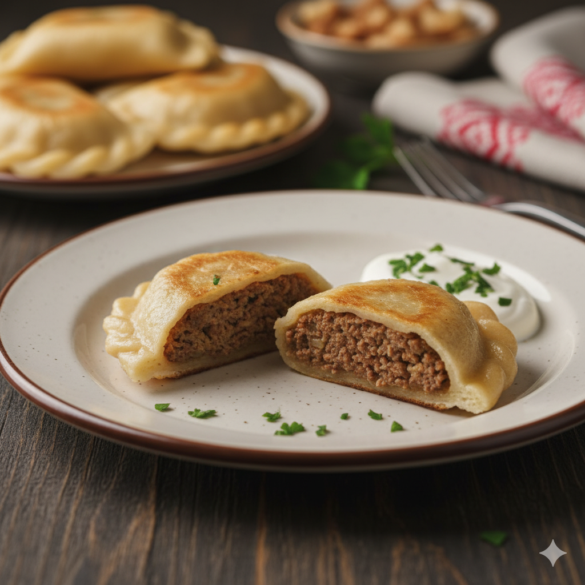

Pierogi z mięsem
Cena: 24 zł / 10 szt.
Soczyste nadzienie z wieprzowiny i wołowiny, doprawione czosnkiem i majerankiem.
Podawane z cebulką i skwarkami; polecamy ze śmietaną lub sosem pieczeniowym.
Najczęściej wskazuje się na wpływy wschodnie i przybycie pierogów do Polski w średniowieczu.
Z czasem danie zaadaptowało lokalne smaki i zaczęło występować w wielu regionalnych odmianach.
Dziś pierogi są symbolem kuchni domowej i popularnym daniem street‑foodowym.
Eksperymentujemy z farszami słonymi i słodkimi, a także wersjami pieczonymi i bezglutenowymi.
Adres: ul. Pierogowa 10, Szczecin
Telefon: +48 123 456 789
Email: pierogi15@gmail.com